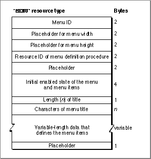
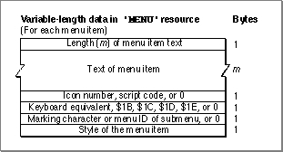

The Menu Resource
You can provide descriptions of your menus in'MENU'resources and use theGetMenufunction orGetNewMBarfunction (if you also provide an'MBAR'resource) to read in the descriptions of your menus. After reading in the resource description, the Menu Manager stores the information about specific menus in menu records.Figure 3-37 shows the format of a compiled
- WARNING
- Menus in a resource must not be purgeable.
'MENU'resource. See Listing 3-1 on page 3-43 for a description of a'MENU'resource in Rez input format.Figure 3-37 Structure of a compiled menu (
'MENU') resource
A compiled version of a
'MENU'resource contains the following elements:If you use the standard menu definition procedure, your
- Menu ID. Each menu in your application should have a unique menu ID. Note that the menu ID does not have to match the resource ID, although by convention most applications assign the same number for a menu's resource ID and menu ID. A negative menu ID indicates a menu belonging to a desk accessory (except for submenus of a desk accessory). A menu ID from 1 through 235 indicates a menu (or submenu) of an application; a menu ID from 236 through 255 indicates a submenu of
a desk accessory. Apple reserves the menu ID of 0.- Placeholder (two integers containing 0) for the menu's width and height. After reading in the resource data, the Menu Manager requests the menu's menu definition procedure to calculate the width and height of the menu and to store these values in the
menuWidthandmenuHeightfields of the menu record.- Resource ID of the menu's menu definition procedure. If the integer 0 appears here (as specified by the
textMenuProcconstant in the Rez input file), the Menu Manager uses the standard menu definition procedure to manage the menu. If you provide your own menu definition procedure, its resource ID should appear in these bytes. After reading in the menu's resource data, the Menu Manager reads in the menu definition procedure, if necessary. The Menu Manager stores a handle to the menu's menu definition procedure in themenuProcfield of the menu record.- Placeholder (an integer containing 0).
- The initial enabled state of the menu and first 31 menu items. This is a 32-bit value, where bits 1-31 indicate if the corresponding menu item is disabled or enabled, and bit 0 indicates whether the menu is enabled or disabled. The Menu Manager automatically enables menu items greater than 31 when a menu is created.
- The length (in bytes) of the menu title.
- The title of the menu.
- Variable-length data that describes the menu items. If you provide your own menu definition procedure, you can define and provide this variable-length data according to the needs of your procedure. The Menu Manager simply reads in the data for each menu item and stores it as variable data at the end of the menu record. The menu definition procedure is responsible for interpreting the contents of the data. For example, the standard menu definition procedure interprets this data according to the description given in the following paragraphs.
- Placeholder (a byte containing 0) to indicate the end of the menu item definitions.
'MENU'resource should describe the menu items in this manner. For each menu item, you need to provide its text, the icon number, the keyboard equivalent or other value ($1B to indicate the menu item has a submenu, $1C to indicate a script code other than the system script for the item's text, $1D to indicate the item's icon should be reduced, or $1E to indicate that an'SICN'icon should be used), the marking character of the menu item or menu ID of the menu item's submenu, and the font style of the menu item's text. If an item doesn't have a particular characteristic, specify 0 for that characteristic. Figure 3-38 shows the variable-length data portion of a compiled'MENU'resource that uses the standard menu definition procedure.Figure 3-38 The variable-length data that describes menu items as defined by the standard menu definition procedure

The variable-length data portion of a compiled version of a
'MENU'resource that uses the standard menu definition procedure contains the following elements:If you provide your own menu definition procedure, you should use the same format
- Length (in bytes) of the menu item's text.
- Text of the menu item.
- Icon number, script code, or 0 (as specified by the
noiconconstant in a Rez input file) if the menu item doesn't contain an icon and uses the system script. The icon number is a number from 1 through 255 (or from 1 through 254 for small or reduced icons). The Menu Manager adds 256 to the icon number to generate the resource ID of the menu item's icon. If a menu item has an icon, you should also provide a'cicn'or an'ICON'resource with the resource ID equal to the icon number plus 256. If you want the Menu Manager to reduce an'ICON'resource to the size of a small icon, also provide the value $1D in the keyboard equivalent field. If you provide an'SICN'resource, provide $1E in the keyboard equivalent field. Otherwise, the Menu Manager looks first for a'cicn'resource with the calculated resource ID and uses that icon. If you want the Menu Manager to draw the item's text in a script other than the system script, specify the script code here and also provide $1C in the keyboard equivalent field. If the script system for the specified script is installed, the Menu Manager draws the item's text using that script. An item that is drawn in a script other than the system script cannot also have an icon.- Keyboard equivalent (specified as a 1-byte character), the value $1B (as specified by the constant
hierarchicalMenuin a Rez input file) if the item has a submenu, the value $1C if the item uses a script other than the system script, or 0 (as specified by thenokeyconstant in a Rez input file) if the item has neither a keyboard equivalent nor a submenu and uses the system script. A menu item can have a keyboard equivalent, a submenu, a small icon, a reduced icon, or a script code, but not more than one of these characteristics. For items containing icons, you can provide $1D in this field if you want the Menu Manager to reduce an'ICON'resource to the size
of a small icon. Provide $1E if you want the Menu Manager to use an'SICN'resource for the item's icon. The values $01 through $1A as well as $1F and $20 are reserved for use by Apple; your application should not use any of these reserved values in this field.- Marking character, the menu ID of the item's submenu, or 0 (as specified by the
nomarkconstant in a Rez input file) if the item has neither a mark nor a submenu. A menu item can have a mark or a submenu, but not both. Submenus of an application should have menu IDs from 1 through 235; submenus of a desk accessory should have menu IDs from 236 through 255.- Font style of the menu item. The constants
bold,italic,plain,outline, andshadowcan be used in a Rez input file to define their corresponding styles.
for your resource descriptions of menus as shown in Figure 3-37. You can use the same format or a format of your choosing to describe menu items. You can also use bits 1-31
of theenableFlagsfield of the menu record as you choose; however, bit 0 must still indicate whether the menu is enabled or disabled.